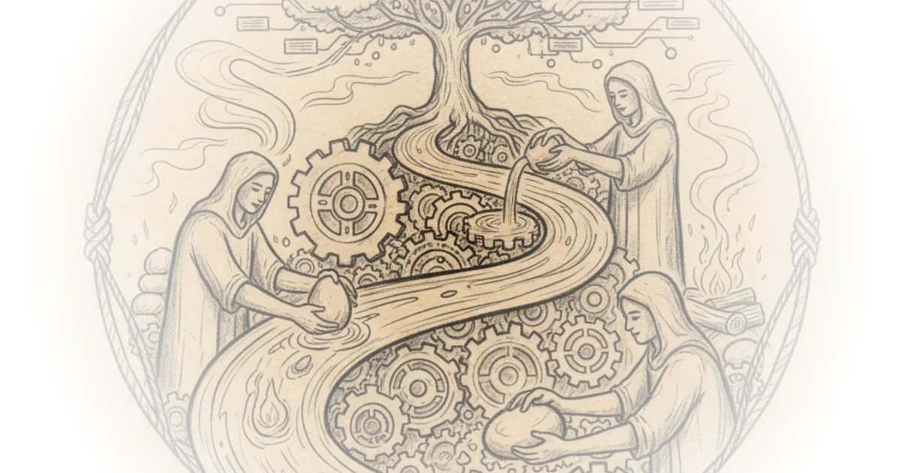

In a world obsessed with patents, copyrights, and the abstract value of "intellectual property," Cory Doctorow argues that we are looking at the wrong asset entirely. The real engine of economic survival isn't the legal right to exclude others, but the invisible, uncodifiable expertise held by the people actually doing the work. This is a vital correction for any leader or investor trying to understand why supply chains snap and why rapid industrialization often fails despite perfect blueprints.
The Illusion of Control
Doctorow begins by dismantling the monolithic concept of "intellectual property" (IP), noting that it has ballooned from a niche legal field into the "dominant area of political economy." He points out that this term is so vague it lumps together wildly different doctrines like copyright, patents, and trademarks, alongside nebulous concepts like "database rights" and even the "format" deals that govern global TV franchises. As Doctorow writes, "IP doesn't just refer to copyright, trademark and patent — though these 'core three' systems are so heterogeneous in basis, scope and enforcement that the act of lumping them together into a single category confuses more than it clarifies."

The author's most striking reframing comes when he defines IP not by what it protects, but by what it enables: "I say that 'IP' means 'any rule, law or policy that allows a company to exert control over its critics, competitors or customers.'" This definition strips away the romanticism of innovation and reveals the mechanism of control. It explains why the executive branch and corporate boards prioritize IP; it is a tool for market dominance that can be bought, sold, and listed on a balance sheet.
"You treasure what you measure — it's also a case of 'you measure what you treasure.'"
However, Doctorow argues that this obsession with measurable assets blinds us to the true source of value: process knowledge. He draws on Dan Wang's book Breakneck to illustrate that while IP is tangible on paper, it is useless without the human context to wield it. This distinction is crucial. A company might own the patent for a vaccine, but without the skilled technicians who know how to mix the chemicals under specific, non-documented conditions, that patent is worthless. Doctorow notes that process knowledge is "squishy, contingent, and wildly important in a world filled with entropy-stricken, off-spec, and stubbornly physical things."
The Human Algorithm
To make this abstract concept concrete, Doctorow turns to a viral internet thread that evolved into a multi-layered conversation on Tumblr. He highlights a story about a dishwasher named Claudio, a "career dish pit man" who understood the restaurant's entire operational flow better than the managers. Claudio knew that the dishwasher machine had a strict cycle time and that any idle second would cascade into chaos for the cooks and servers. As Doctorow paraphrases the lesson, "If you don't have a full load of dishes... ready to go into the dishwasher the second it's done every single time? You can't do it."
This anecdote serves as a powerful metaphor for the entire economy. The "process knowledge" is the ability to anticipate the bottleneck before it happens. It is the "fingertip feeling" for a machine that no manual can capture. Doctorow connects this to a historical parallel in his deep dive on database rights, noting that just as legal frameworks struggle to capture the value of data, they fail to capture the value of the tacit knowledge required to generate that data. The dishwasher's insight wasn't in a spreadsheet; it was in his head, and it was the only thing keeping the business solvent.
The argument extends to the medical field, where a receptionist named Marisol spotted fatal flaws in a new facility's design because she understood the daily reality of patient flow. The architects and CEO, disconnected from the "lifer" experience, designed a building that ignored the need for continuous access to charts and even forgot to include closets. Doctorow writes, "Marisol bemoans the fact that she wasn't given more time with those blueprints, because then she might have spotted that they'd forgotten to include any closets." The result was a facility that functioned poorly because the people who knew how the work actually got done were never consulted.
The Cost of Dismissing Tacit Knowledge
The stakes of ignoring process knowledge are rising. Doctorow critiques the current political and corporate mindset that assumes expertise can be swapped out like software. He points to the dangerous assumption that skilled workers can be replaced by new hires or, worse, by artificial intelligence. "The people who value process knowledge the least are the AI bros who think you can replace skilled workers with a chatbot trained on the things they say and write down," Doctorow observes. This is a critical flaw in the logic of automation; a chatbot can access written manuals, but it cannot access the "mobile phone number of the retired person who knows how to un-jam a machine."
Critics might argue that in a rapidly changing economy, clinging to "old ways" of doing things can stifle innovation, and that formalizing processes is the only way to scale. However, Doctorow's evidence suggests that scaling without process knowledge leads to fragility. When the executive branch attempts to rapidly stand up new factories or re-industrialize sectors without the underlying workforce expertise, they face the same fate as the medical office with no closets: the plan looks perfect on paper, but collapses in practice.
"Process knowledge is far more important than 'IP'... but process knowledge is spread out amongst workers and can't be abstracted away by their bosses."
This disconnect explains why the administration's push for rapid manufacturing often hits a wall. You can write a law to build a factory, but you cannot legislate the "fingertip feeling" required to run it efficiently. As Doctorow puts it, "Your boss can make you sign a contract assigning all your copyrights and patents to the business, but if you and your team quit your job, all that 'IP' will plummet in value without the people who know how to mobilize it."
Bottom Line
Doctorow's analysis is a necessary corrective to the financialization of the economy, reminding us that the most valuable assets are often the ones that cannot be bought. The strongest part of his argument is the demonstration that "process knowledge" is the hidden variable in every economic failure and success, from chip fabrication to restaurant management. The biggest vulnerability, however, is the difficulty of institutionalizing this knowledge; since it lives in people's heads, it is inherently fragile and resistant to the very systems of control that modern corporations rely on. Leaders must watch for the moment when efficiency metrics begin to erode the very expertise that makes the system work.